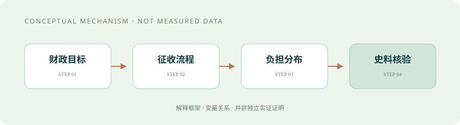

状态：研究提纲。 本周可见两项改革及其比较的提问，但目前没有对应完整回答、史料与原文引证。
分别分析：改革希望解决的财政和治理问题；征收、缴纳、融资与行政流程变化；不同主体承担的成本；地方执行与制度设计的差距；当时币制、人口、市场和财政条件；后世史学的不同解释。
“货币化”“提高国家能力”“减少流程复杂度”等相同标签不能证明两项改革在制度上相同。先独立建立年代和史料表，再做有限机制比较。待核资料：诏令/奏议、同时代记录、现代史学研究和可比财政数据。历史框架。
围绕财政目标、征收流程、成本分配和时代条件建立对读问题表。
证据状态：研究提纲。 这是一份研究问题与候选解释清单；源材料尚不足以支持已完成研究的结论。 机制示意仅辅助理解，不是数据图或因果识别。

状态：研究提纲。 本周可见两项改革及其比较的提问，但目前没有对应完整回答、史料与原文引证。
分别分析：改革希望解决的财政和治理问题；征收、缴纳、融资与行政流程变化；不同主体承担的成本；地方执行与制度设计的差距；当时币制、人口、市场和财政条件；后世史学的不同解释。
“货币化”“提高国家能力”“减少流程复杂度”等相同标签不能证明两项改革在制度上相同。先独立建立年代和史料表，再做有限机制比较。待核资料：诏令/奏议、同时代记录、现代史学研究和可比财政数据。历史框架。